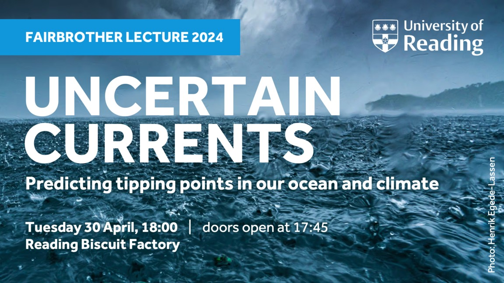

Fairbrother Lecture 2024
The 2024 Fairbrother Lecture on "Uncertain currents - Predicting tipping points in our ocean and climate" took place on 30 April at the Reading Biscuit Factory. Here you can find background information, supporting references and a recording of the lecture.
Standing in the darkened cinema of the Reading Biscuit Factory, Reyk Börner gently nudges a bottle of water until it quivers dangerously. It almost falls but returns to its standing position. He tilts it again and repeats the exercise to his live audience. Up to a certain angle of tilt, gravity returns the bottle to the centre. But past a critical angle, gravitational pull makes the bottle tilt even further until it inevitably falls, perfectly demonstrating the concept of a tipping point.
In a Fairbrother Lecture that made the mathematics of climate digestible, Reyk Börner walked a local audience through the complexities of understanding climate tipping in a huge system of ocean currents, the Atlantic Meridional Overturning Circulation (AMOC), which is responsible for Europe's relatively mild climate. Past climate patterns show that these currents can switch abruptly between today’s vigorous flow and a much weaker flow state. A future shutdown would have potentially devastating consequences in the UK and around the world. Media stories often paint a catastrophic picture of possible climate futures, with runaway ice sheet collapse, abrupt sea level rise and rainforest dieback, possibly triggered as early as this decade. But how close are we really to these tipping points?
One issue I hoped to convey in my Fairbrother lecture is that we are dealing with multiple layers of uncertainty in attempting to answer this question. Uncertainty is a difficult message and people understandably seek answers to important questions about their future: how close are we are to tipping? Or at what level of global warming will we cross the tipping point (1.5 degrees, 2 degrees, etc.)?
Some of the uncertainty involved includes data uncertainty – we only started to systematically measure the ocean current 20 years ago. So we have to reconstruct the AMOC strength of the past from so-called fingerprints, such as sea surface temperatures. Another layer of uncertainty exists in the way we build models and how we apply mathematical theories. However, these types of uncertainty can be reduced by getting more data and improving our models continuously.

But there is yet another kind of uncertainty – the climate itself is a chaotic system. Perhaps you have heard of the butterfly effect by which, metaphorically, even a tiny change like a butterfly flapping its wings can change the course of global weather. This is why weather forecasts don't extend much farther than two weeks or so. Our research shows that chaos becomes particularly important when you get close to a tipping point, making the climate's long-term evolution highly unpredictable.
What do we do in light of this intrinsic uncertainty? I see this something like a game of climate roulette. Imagine you have two guns, each with many bullet chambers. One gun is loaded with many bullets, representing a future with high greenhouse gas emissions. The other has fewer bullets and corresponds to a world where we have curbed emissions. Which gun would you play with? Though there is no certainty about whether the gun will go off in either case, having more bullets inside significantly increases the risk of the gun firing a live round.
Uncertainty can be paralysing, but the truth is that we make decisions under uncertainty every day. Take the example of a house fire. We cannot predict with certainty if and when a house will burn but we still manage the risk through measures like smoke alarms and fireproof materials. I believe the best risk management available to us is to swiftly reach net zero emissions to stabilise the future of our planet. Even without tipping, the climate crisis is already one of the greatest threats of our time.
Text from the Doctoral Research Highlights 2024, by Joanna John and me.
Watch the lecture
Supporting references
In the following, you'll find a selection of scientific publications and further links to the information sources and visuals used in the lecture, ordered chronologically by themes.
Time scales and irreversibility
The two quotes are paraphrases from the short film 'Coastal Requiem' by Diane Tuft that was screened before the lecture.
Climate tipping elements
For a scientific overview of climate tipping elements, including the examples discussed in the lecture, take a look at the references below. The recent Global Tipping Points Report also offers information on different levels of detail. The world map of climate tipping elements shown in the lecture is based on Armstrong McKay et al. (2022).
In the summary for policymakers of the IPCC Assessment Report 6, climate tipping elements are mentioned in section C.3, among other places. This article on CarbonBrief offers a nice overview of what the report says about tipping points.
Positive feedbacks in the climate system
Polar ice sheets: Melt-elevation feedback
Other relevant positive feedbacks in ice sheets (not mentioned in the lecture) are the ice-albedo feedback and, particularly in Antarctica, the Marine Ice Sheet Instability (MISI).
Amazon rainforest: Forest-rain feedback
Atlantic Meridional Overturning Circulation (AMOC)
- Animation: 'Global Sea Surface Currents and Temperature', by Greg Shira, NASA/Goddard Space Flight Center Scientific Visualization Studio
- Animation: 'The Thermohaline Circulation - The Great Ocean Conveyor Belt', by Greg Shira, NASA/Goddard Space Flight Center Scientific Visualization Studio. The Blue Marble Next Generation data is courtesy of Reto Stockli (NASA/GSFC) and NASA's Earth Observatory.
- Movie reference: 'The Day After Tomorrow', dir. Roland Emmerich, 20th Century Fox (2004)
Here are some scientific papers discussing the multistability of the AMOC.
Stommel model: Atlantic spherical cow
Past climate: ice core records
The ice core data are publicly available from the Centre for Ice and Climate at the Niels Bohr Institute, University of Copenhagen.
To construct the Arctic temperature timeseries over the past 100 thousand years shown in the lecture, I used datasets described in the following papers:
Future climate: Earth system models
- Video: Comparison of cloud patterns observed with satellites vs. simulated by a climate model.
Projected AMOC strength until 2100
The figure source on the slide entitled "Projected AMOC strength until 2100" was falsely cited as originating from the IPCC Assessment Report 6. Instead, the figure is adapted from Fig. 6.8 of the Special Report on the Ocean and Cryosphere in a Changing Climate (2019).
AMOC impacts
Papers cited in the lecture:
Further articles on impacts of a potential future AMOC decline:
Predicting AMOC tipping points
The journal article about early-warning signs of an AMOC collapse and its media echo discussed in the lecture is by Ditlevsen & Ditlevsen (2023):
Below are additional recent studies that look for early-warning signs of an AMOC tipping point.
Uncertainty and limitations
These papers highlight some of the limitations and complexities of the climate system that make predictions of the future of the AMOC challenging and uncertain.
Outlook
The figure on the slide "No tipping ahead - all linear?" is Fig. SPM.10 in the Summary for Policymakers of the IPCC Assessment Report 6 (2021).
The metaphor of a house fire to illustrate risk management under uncertainty was inspired by a talk by Richard Wood (UK Met Office).
Thank you for your interest in the lecture! For questions or feedback, feel free to contact me.